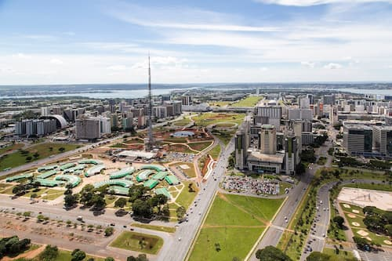

Getulio da Silva Carvalho Junior
Sobre mim
Estou cursando Desenvolvimento de Software e desenvolvendo minhas habilidades em programação web.
Brasil

Brasília é a capital do Brasil e está localizada no Cerrado, um bioma conhecido por sua rica biodiversidade. A cidade se destaca pela arquitetura moderna e pela presença de áreas verdes.
Foto: Governo do Brasil (metadados: Tomás Faquini). Fonte e licença CC BY 3.0 BR . Imagem redimensionada.